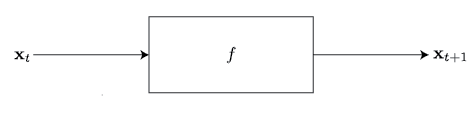
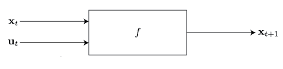
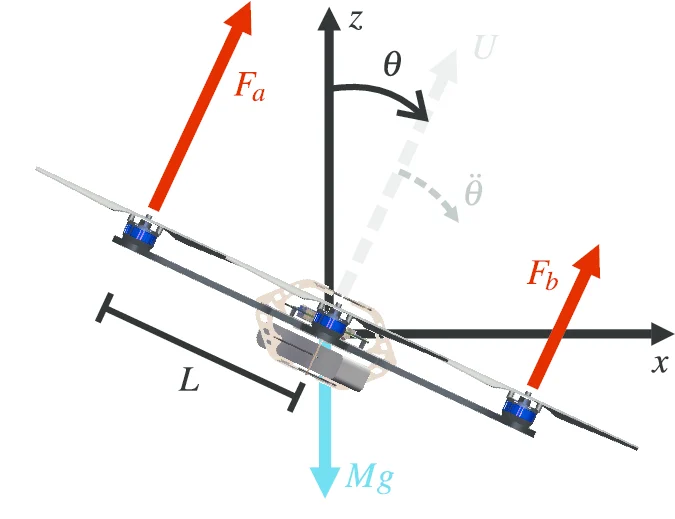

Dynamics Models¶
We use the language of dynamical systems to understand and analyze how robots evolve in the environment.
Basics of Dynamical Systems¶
We define for a robot a state vector \(\mathbf{x}\), which exists inside of some \(n\)-dimensional statespace \(\mathcal{X}\), which we typically consider to be a subset of the real numbers \(\mathbf{R}^n\). This state vector include define things like the position of the robot, its velocity, or more abstract things like the state of an estimator or battery charge.
We consider this state to be evolving by some function \(f : \mathcal{X} \to \mathcal{X}\), that controls how the state changes from one moment in time to the next. We consider both a continuous time formulation, where the system evolves by the ordinary differential equation (ODE), $$ \dot{\mathbf{x}} = f(\mathbf{x}), $$ or a simpler discrete-time formulation, $$ \mathbf{x}_{t+1} = \mathbf{x} + f(\mathbf{x}_t). $$
You will often see control diagrams like this

showing how the state evolves through different functions.
But in robotics, we are interested in controlling the system we are describing! So we usually want to consider a system with some control input vector \(\mathbf{u} \in \mathcal{U}\), again usually a subset of \(\mathbf{R}^m\). We then consider the state to be evolving by a function \(f : \mathcal{X} \times \mathcal{U} \to \mathcal{X}\), such that the control input changes the evolution of the state. In continuous time, we write $$ \dot{\mathbf{x}} = f(\mathbf{x}, \mathbf{u}), $$ and in discrete-time, $$ \mathbf{x}_{t+1} = \mathbf{x} + f(\mathbf{x}_t, \mathbf{u}_t). $$
This results in the following control diagram,

In general, the form of \(f\) is very important on what control techniques we can apply to the system. For example, if \(f\) is linear, then we can write $$\label{eq:linear_system} \dot{\mathbf{x}} = A\mathbf{x} + B \mathbf{u}, $$ where \(A \in \mathbb{R}^{n \times n}\) determines the evolution of the 'uncotrollable portion' of the state, and \(B \in \mathbb{R}^{n \times m}\) determines how the control input effects the state. The control and study of linear systems is a field in its own right. We work primarily with nonlinear systems in this lab, but many of the results underpinning nonlinear systems theory can be traced back to results from linear systems, so understanding their behavior and the theory behind their control is important!
Exercise: General Linear System Dynamics¶
Following the continuous time linear dynamics in \(\eqref{eq:linear_system}\), implement the function f for a general linear system.
General linear dynamics — LinearDynamics.f (src/dasc_lab/dynamics/linear.py:14-16)
Exercise: Single-Integrator System¶
We can now implement two common realizations of a linear system in our robotics environments. First, consider a single-integrator. Let \(\mathbf{x} \in \mathbb{R}^n\) be the state, and \(\mathbf{u} \in \mathbb{R}\) the control input. Then single-integrator dynamics are given by, $$\label{eq:single_integrator} \dot{\mathbf{x}} = \mathbf{u}. $$
This is analogous to the notion of 'velocity control'. This is one of the simples classes of systems we can consider; it has effectively unlimited control over its state, as it can stop or change direction instantaneously, and thus follow arbitrary continuous trajectories.
We see that the relationship between \(\dot{\mathbf{x}}\) and \(\mathbf{x}, \; \mathbf{u}\) is linear, thus we can write a single integrator as a linear system. Consider e.g. a 2D system. Then, $$ \begin{bmatrix} \dot{x}_1\\ \dot{x}_2 \end{bmatrix} = \begin{bmatrix} 1 & 0\\ 0 & 1 \end{bmatrix} \begin{bmatrix} u_1\\ u_2 \end{bmatrix} $$
Complete the __init__() function for a single-integrator, which inherits \(f\) from the LinearSystem class you just created. Create the instance of the super by calling super().__init__(A, B).
Single integrator dynamics — SingleIntegrator.init (src/dasc_lab/dynamics/single_integrator.py:9-11)
Exercise: Double-Integrator System¶
A single-integrator system treats velocity as the control input: $$ \dot{\mathbf{x}}=\mathbf{u}. $$ A double-integrator system instead treats acceleration as the control input. Let \(\mathbf{x}\in\mathbb{R}^n\) denote position and let \(\mathbf{u}\in\mathbb{R}^n\) denote the commanded acceleration. The dynamics are $$ \ddot{\mathbf{x}}=\mathbf{u}. $$ To express these second-order dynamics as a first-order system, define the augmented state $$ \mathbf{z} = \begin{bmatrix} \mathbf{x}\\ \dot{\mathbf{x}} \end{bmatrix} \in\mathbb{R}^{2n}. $$ Its derivative is $$ \dot{\mathbf{z}} = \begin{bmatrix} \dot{\mathbf{x}}\\ \ddot{\mathbf{x}} \end{bmatrix} = \begin{bmatrix} \dot{\mathbf{x}}\\ \mathbf{u} \end{bmatrix}. $$ Therefore, the double integrator can be written as the linear system $$ \dot{\mathbf{z}}=A\mathbf{z}+B\mathbf{u}, $$ where $$ A = \begin{bmatrix} \mathbf{0} & \mathbf{I}\\ \mathbf{0} & \mathbf{0} \end{bmatrix} \in\mathbb{R}^{2n\times 2n}, \qquad B = \begin{bmatrix} \mathbf{0}\\ \mathbf{I} \end{bmatrix} \in\mathbb{R}^{2n\times n}. $$ Here, \(\mathbf{I}\in\mathbb{R}^{n\times n}\) is the identity matrix and \(\mathbf{0}\in\mathbb{R}^{n\times n}\) is the zero matrix. The name “double integrator” reflects the fact that the input must be integrated once to obtain velocity and twice to obtain position.
Double integrator dynamics — DoubleIntegrator.init (src/dasc_lab/dynamics/double_integrator.py:9-11)
This process of defining an augmented state vector to reduce the complexity of a system is also very common and useful technique.
Exercise: 2D Unicycle¶
The 2D unicycle is our first example of a non-linear system. Its state is given by \(\begin{bmatrix}x & y & \theta\end{bmatrix}^\top \in \mathbb{R}^3\), and control given by \(\begin{bmatrix}v & \omega\end{bmatrix}^\top \in \mathbb{R}^2\), where \((x,y)\) is the position of the vehicle in the 2D plane, \(\theta\) is the heading angle, \(v\) is the velocity, and \(\omega\) is the angular velocity.
The key difference between this model and the previous ones is the heading-angle: this robot can't just 'move sideways' directly by inputting a velocity command. It must change its heading through the \(\omega\) input.
The system dynamics are given by: $$ \begin{bmatrix} \dot{x}\\ \dot{y}\\ \dot{\theta} \end{bmatrix} = \begin{bmatrix} v \cdot \cos \theta\\ v \cdot \sin \theta\\ \omega \end{bmatrix}. $$
Because of the \(\sin\) and \(\cos\) functions, this system is non-linear: we can not write this as a linear system! Implement the 2D unicycle dynamics:
Unicycle forward dynamics — Unicycle2D.f (src/dasc_lab/dynamics/unicycle_2d.py:9-14)
If we introduce an integrator on the velocity term, we get what is known as the dynamic unicycle model. Its state is given by \(\begin{bmatrix}x & y & \theta & v\end{bmatrix}^\top \in \mathbb{R}^3\), and control given by \(\begin{bmatrix}a & \omega\end{bmatrix}^\top \in \mathbb{R}^2\) where \(\theta\) is heading angle, \(v\) is velocity, \(a\) is acceleration, and \(\omega\) is angular velocity. Its dynamics are given by, $$ \begin{bmatrix} \dot{x}\\ \dot{y}\\ \dot{\theta}\\ \dot{v} \end{bmatrix} = \begin{bmatrix} v \cdot \cos \theta\\ v \cdot \sin \theta\\ \omega\\ a \end{bmatrix}. $$
The kinematic unicycle is often used as an approximation in planning for more complicated systems, from differential-drive ground robots to humanoids.
Exercise: 2D Planar Quadrotor¶
We now introduce a simplified 2D quadrotor model known as the planar quadrotor.
Its state is given by \(\begin{bmatrix}x & z & \theta & \dot{x} & \dot{z} & \dot{\theta}\end{bmatrix}^\top\) and control is given by \(\begin{bmatrix}F_a & F_b\end{bmatrix}^\top\), as shown in the diagram.

\(L\) is the distance from the center of mass to the rotors, \(M\) is the mass of the quadrotor, and \(g\) is acceleration due to gravity. It also has moment of inertia \(I\) about its center of mass, around the out-of-plane pitch/rotation axis.
Its system dynamics are given by $$ \begin{bmatrix} \dot{x}\\ \dot{z}\\ \dot{\theta}\\ \ddot{x}\\ \ddot{z}\\ \ddot{\theta} \end{bmatrix} = \begin{bmatrix} \dot{x}\\ \dot{z}\\ \dot{\theta}\\ -\frac{1}{M} \sin(\theta) (F_a + F_b)\\ -g + \frac{1}{M} \cos(\theta) (F_a + F_b)\\ \frac{L}{I} (F_b - F_a) \end{bmatrix} $$
Now implement the dynamics!
Planar quadrotor dynamics — PlanarQuadrotor.f (src/dasc_lab/dynamics/planar_quadrotor.py:16-21)